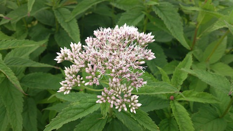

<DOCTYPE html>
<html lang="ja">
<head>
<meta charset="UTF-8">
<meta name="author" content="hiroyky">
<title>Trimming Sample by JavaScript</title>
<script type="text/javascript" src="jquery-1.4.2.js"></script>
<script type="text/javascript">
/**
* 画像を指定のサイズになるように切り抜るCSSを付与します．画像はposition: absoluteで無ければイケません．
* @param image {Object} 対象となる画像要素
* @param width {Number} 切り取り後の横幅
* @param height {Number} 切り取り後の縦幅
* @param positoinX 切り取り開始位置X(値，もしくは文字列left, center, right)
* @param positionY 切り取り開始位置Y(値，もしくは文字列top, middle, bottom)
*/
var clipImageFitSize = function(image, width, height, positionX, positionY) {
	var top, left, right, bottom;
	if(typeof(positionX) == "Number") {
		left = positionX;
		right = width + positionX;
	} else if(positionX == "left") {
		left = 0;
		right  = width;
	} else if(positionX == "center") {
		left = image.width / 2 - width / 2;
		left = (left < 0 ? 0 : left);
		right = left + width;
	} else if(positionX == "right") {
		left = width;
		right = 0;
	}

	if(typeof(positionY) == "Number") {
		top = positionY;
		bottom = height + positionY;
	} else if(positionY == "top") {
		top = 0;
		bottom = height;
	} else if(positionY == "middle") {
		top = image.height / 2 - height / 2;
		top = (top < 0 ? 0 : top);
		bottom = top + height;
	} else if(positionY == "bottom") {
		top = height;
		bottom = 0;
	}
	right = (right > image.width ? image.width : right);
	bottom = (bottom > image.height ? image.height : bottom);
	var cssStr = "rect(" + String(top) + "px " + String(right) + "px " + String(bottom) + "px " + String(left) + "px)";
	$(image).css("clip", cssStr);
	$(image).css("left", String(-1 * left) + "px");
	$(image).css("top", String(-1 * top) + "px");
	moveToCenter(image);
}

/**
* 要素を親要素の中央に配置します．position: absoluteで無ければイケません．
* @param element {Object} 対象のオブジェクト
*/
var moveToCenter = function(element) {
	var parent = $(element).parent().get(0);
	var left = $(parent).width() / 2 - $(element).width() / 2;
	var top = $(parent).height()  / 2 - $(element).height()  / 2;
	$(element).css("left", left);
	$(element).css("top", top);
}
</script>
<style type="text/css">
div {
    width: 480px;
    height: 271px;
    padding: 0px;
    background-color: #DDDDFF;
}
div.container {
    position: relative;
}
div.container img {
    /** absoluteに設定する必要がある．  */
    position: absolute;
}
</style>
</head>
<body>
<h1>トリミングのサンプル</h1>
<noscript>JavaScriptが実行できません．</noscript>
<h2>元画像</h2>
<div></div>

<h2>切り取り後</h2>
<div class="container">

</div>
<p>(C) hiroyky</p>
</body>
</html>